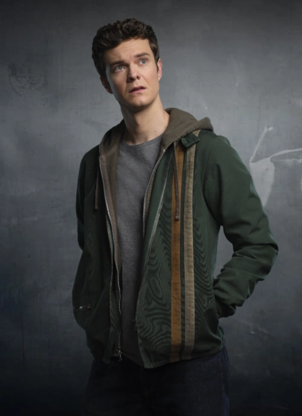
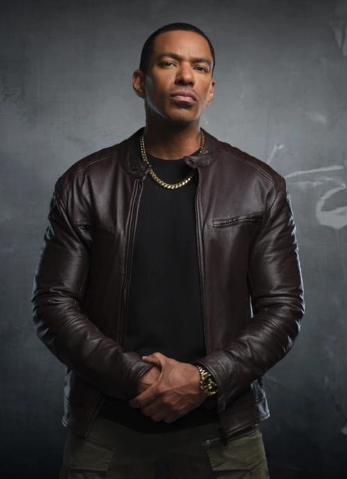
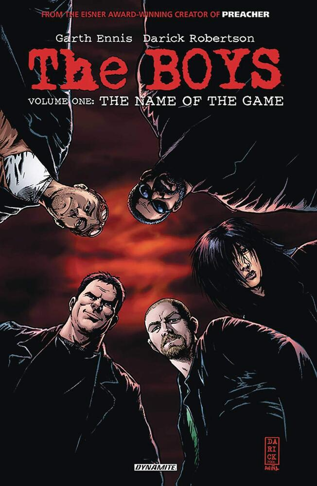
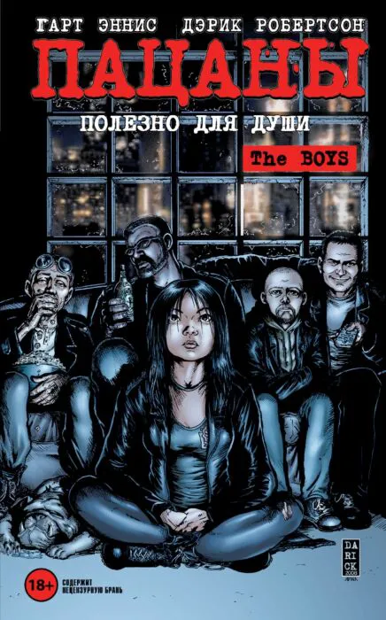
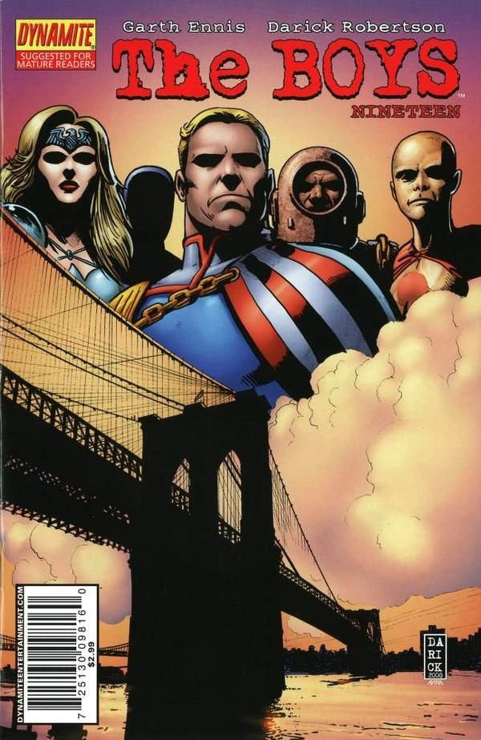
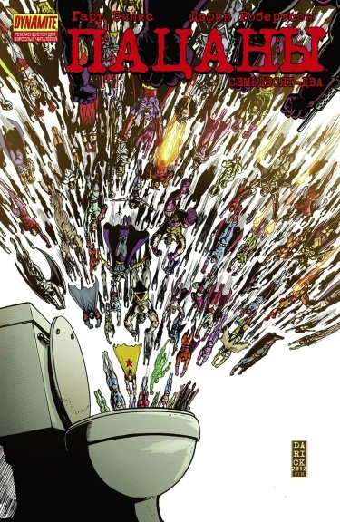
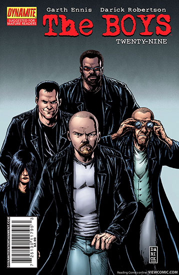

Альтернативная реальность
«Пацаны» — злая пародия на привычный образ супергероев, которую нужно смотреть, если вам надоели клишированные истории про идеальных спасителей Земли.
В сериале от режиссера «Сверхестественного» Эрика Крипке, супергерои — настоящие подонки, которые не несут никакой ответственности за свои поступки благодаря славе и деньгам. Группа мстителей, состоящая из обычных людей, собирается покончить с их беспределом.
Любимые персонажы автора

Билли Бутчер

Хьюи Кэмпбелл

ММ (Молоко Матери)





"Пацаны" (The Boys) - серия комиксов, созданная автором Гартом Эннисом и художником Дариком Робертсоном в 2006 году. Этот комикс является черной комедией и сатирой на супергеройские истории, которые обычно присутствуют в комиксах и фильмах.
Комикс также затрагивает темы политики, коррупции и медиа-манипуляций. Он поднимает вопросы о том, как супергерои могут быть использованы для достижения политических целей и как они могут быть идеализированы и контролированы с помощью СМИ.